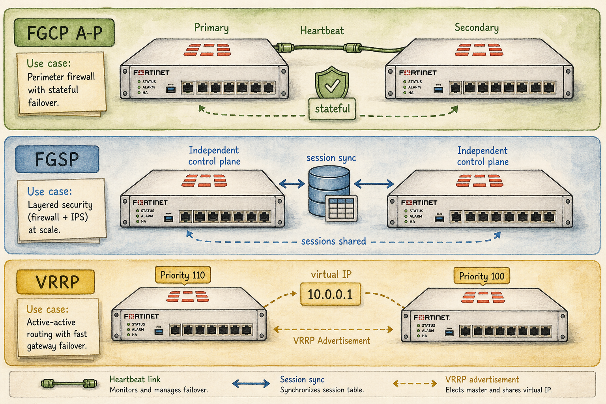

Ready to Begin the Session
| Official NSE7 EF Blueprint Objectives |
|
| Prerequisites | Session 05: Lab Mindset, Reference Topology & Troubleshooting |
| Estimated Duration | 20-25 minutes |
| Phase | Phase 4 — High Availability: FGCP, FGSP, VRRP |
Session 15 — The HA Problem — Why One FortiGate Isn't Enough Where we are in the NSE7 journey: Every device dies eventually. The question is whether traffic dies with it. HA is how we keep the answer 'no'. The problem we're solving today: The blueprint expects you to choose between FGCP, FGSP and VRRP for a given scenario. Choosing wrong cascades into broken failover, asymmetric routing or session drops. Session goal: From memory, sketch the three HA topologies and explain which one fits 'two FortiGates at the edge with one ISP'. Key concepts: • MTBF, MTTR and availability vocabulary • Stateful vs stateless failover • Three answers: FGCP, FGSP, VRRP — what each solves • Convergence time vs configuration cost • Failure domains and 'two FortiGates is not always one cluster'
Where We Are in the NSE7 Journey

Three stacked HA scenarios.
Every device dies eventually. The question is whether traffic dies with it. HA is how we keep the answer 'no'.
The Problem We're Solving Today
The blueprint expects you to choose between FGCP, FGSP and VRRP for a given scenario. Choosing wrong cascades into broken failover, asymmetric routing or session drops.
Key Concepts
- MTBF, MTTR and availability vocabulary
- Stateful vs stateless failover
- Three answers: FGCP, FGSP, VRRP — what each solves
- Convergence time vs configuration cost
- Failure domains and 'two FortiGates is not always one cluster'
What We Discovered Together
Parsed from the persistent session summary produced at the end of the Socratic investigation. Use it to rebuild context before a review or a lab.
Session Information
- Session Number15
- TopicThe HA Problem — Why One FortiGate Isn't Enough (FGCP, FGSP, VRRP)
- DateJuly 2026
- CertificationFortinet NSE7 Enterprise Firewall 7.6
- Blueprint Domain1.3 — Configure different operation modes for an HA cluster
Story Progress
Setting: Vaultline Financial, ~three weeks of story time.
Sunday 02:47: HQ edge FortiGate dies (power supply). Marcus's textbook 4-hour cold-spare recovery still drops the overnight settlement VPNs to two clearing partners; one invokes an SLA penalty. Priya challenges the two-FortiGate re-quote: "we effectively HAD two FortiGates and it still cost us four hours."
Meridian integration begins: at a branch (25 staff, flat LAN, gateway 192.168.10.1 on an ageing third-party router), Priya requires a two-week dual-running transition — no endpoint changes, survive either device failing. This became the VRRP scenario.
Thursday 14:20, three weeks after the HQ FGCP pair goes live: Box A's PSU dies. Failover in ~1s, tunnels never drop — but Box B's CPU hits 95% for 45s; users report the portal "hanging." Diagnosed as expected NP7 resync; verdict deferred pending peak-throughput correlation.
Characters: Priya (Head of Network Security — her challenges drove all three scenarios), Marcus (NOC engineer — Sunday recovery and Thursday observation).
Outstanding / cliffhangers- Peak-throughput correlation for Thursday is PENDING; a controlled failover test at peak-equivalent load was recommended — natural opening for a future session (vehicle for HA operation details, monitored interfaces, failover triggers).
- Meridian branch final cutover (old router decommission) pending.
- Vaultline VDOM split-architecture (Sessions 02/39/40) still unimplemented; virtual clustering/VDOM partitioning only touched this session — connects to that thread.
- Full re-quoted design (Session 03) still owed to Priya; it now includes the HA-pair justification.
Concepts Learned
2. Two separate HA mechanisms with separate jobs and failure modes: heartbeat ("is the peer alive?") and session sync ("here is my live state"). Stateful vs stateless failover; traffic type decides which is acceptable.
3. FGCP: single logical cluster (2-4 devices), near-identical synced config (only HA identity differs), heartbeat (Eth 0x8890/0x8891; config sync 0x8893), stateful session sync INCLUDING IPsec SAs. Supports A-P and A-A (A-A distributes proxy sessions by default; load-balance-all extends). Override + priority are per-member, never synced. Dedicated session-sync-dev links recommended to avoid heartbeat starvation/false failover.
4. FGSP: independent peers, session sync ONLY (TCP + IPsec by default; UDP/ICMP/expectation/NAT opt-in via session-pickup-*). External devices own distribution AND failure detection. Asymmetric traffic returns to session owner (L2, or UDP-encapsulated L3 in cloud). Sync L3 default, L2 via session-sync-dev, optionally IPsec-encrypted. 2-16 peers, or FGCP clusters as peers (the technologies compose). Optional standalone config sync. VRRP-compatible.
5. VRRP: open IETF standard = the only multi-vendor answer. Virtual IP + well-known virtual MAC owned by the group; endpoint ARP caches never change, so outage collapses to failure-detection time. Can monitor up to two (ideally remote) destinations. Moves identity, NEVER state.
6. NP7 resync after FGCP failover (resolves the open Sessions 39/40 question): kernel session entries cross the sync link; NP7 hardware entries are local silicon and never do. First packet of every inherited session is CPU-punted to reprogram the local NP7. Worst case: 100% of offloaded sessions CPU-bound simultaneously. Sizing principle: size each member for its partner's full offloaded workload. Undersized CPU: drops, TCP retransmits, feedback loop.
My Understanding
Strong: independently derived heartbeat, session sync, stateful/stateless, and FGCP's identical-config rule (with correct exceptions) before any terms were named. Derived FGSP's session-only property and assigned failure detection to the upstream device; guessed VRRP as that mechanism unprompted. Nailed the ARP/virtual-MAC chain for VRRP and deduced the open-standard requirement from the multi-vendor constraint. In the NP7 thread: predicted kernel-only sync, CPU-punt re-establishment, the 100% worst case, and independently discovered the drops-retransmits feedback loop ("wouldn't be a fraction, it would be 100%").
Corrections made- Called FGCP "active/standby only" -> FGCP supports A-A; the real FGCP/FGSP divide is config coupling + shared identity, not distribution style. (Classic exam trap — reinforce.)
- Predicted synced sessions "arrive already offloaded" -> corrected to kernel-vs-silicon distinction via guided reasoning.
- Rated the undersized-CPU outcome "recovers a bit slowly" -> pushed to discover the retransmission feedback loop.
- KEY MISCONCEPTION CORRECTED: believed FGCP could not seamlessly fail over IPsec tunnels. Verified against the official 7.6 guide: FGCP and FGSP both sync IPsec tunnel state. Root cause: conflating Sunday's cold-spare recovery (no live sync -> renegotiation) with clustered stateful failover. Student resolved it cleanly in one sentence.
- Judged the Thursday spike "a success" on recovery alone -> refined to "recovery is necessary, not sufficient evidence."
Troubleshooting Experience
- ScenarioThursday post-failover incident (1s failover, tunnels intact, 45s CPU at 95%, portal "hanging").
- Method developed(1) reconstruct the timeline; (2) treat intact tunnels as PROOF session sync worked, not just a good outcome; (3) explain the spike from the kernel/NP7 mechanism; (4) verdict needs four evidence items — failover timestamp vs FortiAnalyzer peak throughput, drop/retransmit counters (busy vs overloaded-and-dropping), tunnel status, post-spike CPU trend; (5) recommend a controlled peak-load failover test rather than waiting for reality.
- Lessonsexpected-cost vs malfunction; "it recovered" is not "it's safely sized"; same failure trigger + different architecture = different outcome (Sunday vs Thursday).
Connections
- PreviousS01 (HA sits in Domain 1), S02 (session table as central structure; its open question "does session sync include offload state?" NOW ANSWERED: no), S03 (edge/datacenter roles mandate HA; sizing-by-role extended to sizing-for-failover), S39/40 (NP7 offload verdict; "does offload survive failover?" RESOLVED).
- FutureHA operation details (election criteria, monitored interfaces, failover triggers, virtual clustering in depth — this session covered protocol identities, not full FGCP mechanics); FGSP+VRRP combined designs; HA under FortiManager; HA implications for OSPF/BGP adjacencies and IPsec/ADVPN failover.
Important Takeaways
2. FGCP = one identity, everything synced, cluster owns failover. FGSP = independent peers, session data only, network owns failover. VRRP = open-standard identity float, never state.
3. A-A vs A-P does NOT distinguish FGCP from FGSP; config coupling + shared identity does.
4. FGCP and FGSP both sync IPsec tunnels; cold-spare recovery is what renegotiates.
5. Kernel sync never programs the peer's NP7. Post-failover CPU spike = expected resync; worst case 100% at once. Size for the worst second.
6. Recovery is necessary evidence, never sufficient — four checks before a verdict.
Future Session Notes
- ReinforceFGCP A-A nuances (proxy-session distribution default, load-balance-all); override/priority non-sync detail; FGSP session-pickup-* opt-ins; VRRP destination monitoring — all touched briefly.
- Spaced repetitionin 1 session, cold-open quiz "two boxes, drifted config, upstream LB — which protocol, why not the others?"; in 2 sessions, re-ask what crosses the FGCP sync link + worst-case CPU fraction; in 3-4 sessions, a scenario mixing FGSP + VRRP + an FGCP cluster as an FGSP peer.
- Storyopen the next relevant session with the scheduled peak-load failover test (Marcus running, Priya observing); Meridian final cutover pending; VDOM implementation still owed; the S02 junior engineer could return via the failover test's change process.
Audio Podcast Prompt (For "The Packet Path")
Generate a two-host audio podcast script for "The Packet Path," a storytelling podcast for network engineers. Host: Alex, an experienced network security consultant. Co-host: Sam, smart and curious, asks clarifying questions. Tone: intelligent, conversational, true-crime documentary style for network engineers. Episode title: "The 45 Seconds Nobody Saw Coming." Structure the episode around two incidents at Vaultline Financial, a fictional financial services firm, separated by three weeks — same failure (a dead power supply on the HQ edge firewall), two completely different outcomes.
Act 1 — The Sunday Incident: 02:47, the HQ edge FortiGate dies. Marcus, the overnight NOC engineer, performs a flawless cold-spare recovery in four hours — locate hardware, restore config backup, cable, validate. Textbook. Yet Monday morning the board is furious: overnight batch settlement VPNs to two clearing partners dropped and an SLA penalty was invoked. Alex uses this to unpack the difference between configuration (what a box was told — restorable) and state (what a box knows — sessions, VPN security associations — gone at power loss). Sam should press: "but they HAD a spare?" leading to MTTR, and then to the two missing mechanisms: a heartbeat (liveness) and session synchronization (live state), and the vocabulary of stateful vs stateless failover.
Act 2 — Three Answers: Alex walks Sam through Fortinet's three HA technologies as answers to three different problems. FGCP: one logical cluster, two bodies — synced config, heartbeat, stateful session sync including IPsec SAs. FGSP: two independent firewalls that share only session-table data while an external load balancer decides where traffic goes — the answer when config has drifted and boxes are separately managed. VRRP: the open-standard answer — a virtual IP plus virtual MAC floating between multi-vendor gateways so endpoint ARP caches never change; moves identity, never state. Include the trap: active/active does not mean FGSP — FGCP does active/active too; the real divide is config coupling and shared identity.
Act 3 — The Thursday Incident: three weeks after the FGCP pair goes live, the same failure hits. Failover in one second, tunnels never blink — but the surviving box's CPU pins at 95% for 45 seconds and users see the portal hang. The mystery: why does a perfect failover hurt? Reveal: kernel session entries cross the sync link, but NP7 hardware offload entries are local silicon — every inherited session's first packet must be CPU-processed to reprogram the fast path, worst case 100% of offloaded sessions at once. Discuss the sizing principle (size for the worst second, not the average day), the drops→retransmits→overload feedback loop, and the closing discipline: recovery is necessary evidence, never sufficient — verdict requires correlating against peak throughput, checking drop/retransmit counters, tunnel status, and CPU trend. End on the recommendation of a controlled peak-load failover test. Close with Alex's one-liner: "The failover moved the address book, not the muscle memory."
Guides, Bites & Nibbles
Additional resources sorted to this session — deeper guides, focused explainers, and quick-reference cards.